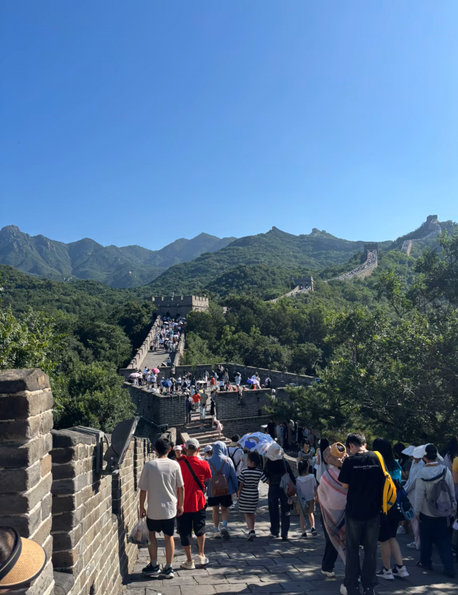
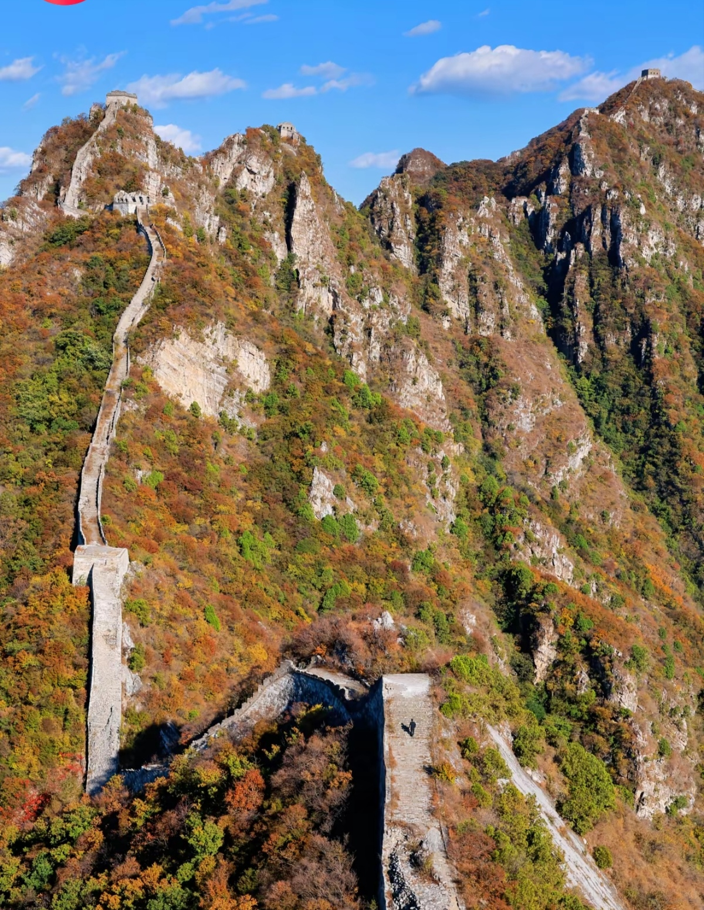
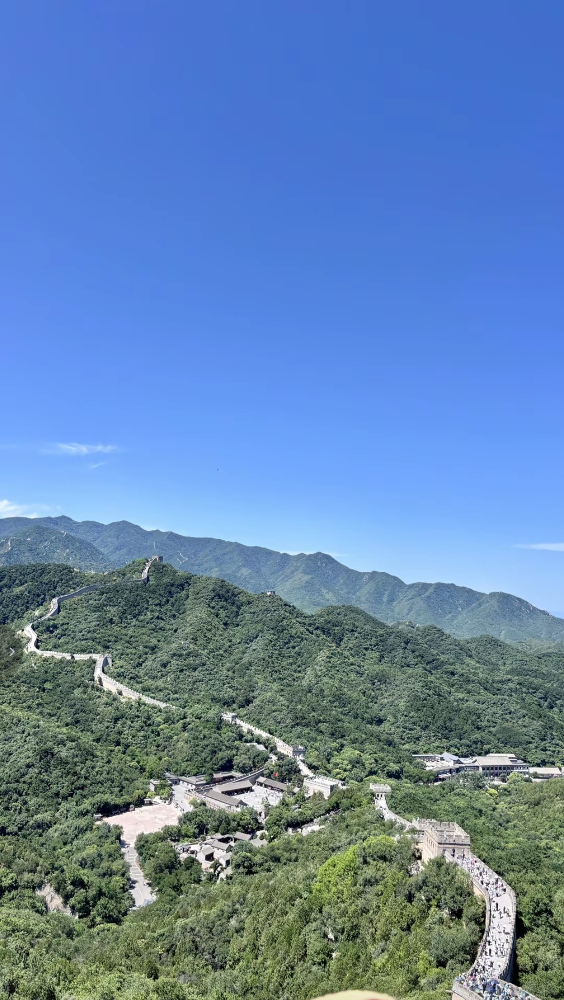
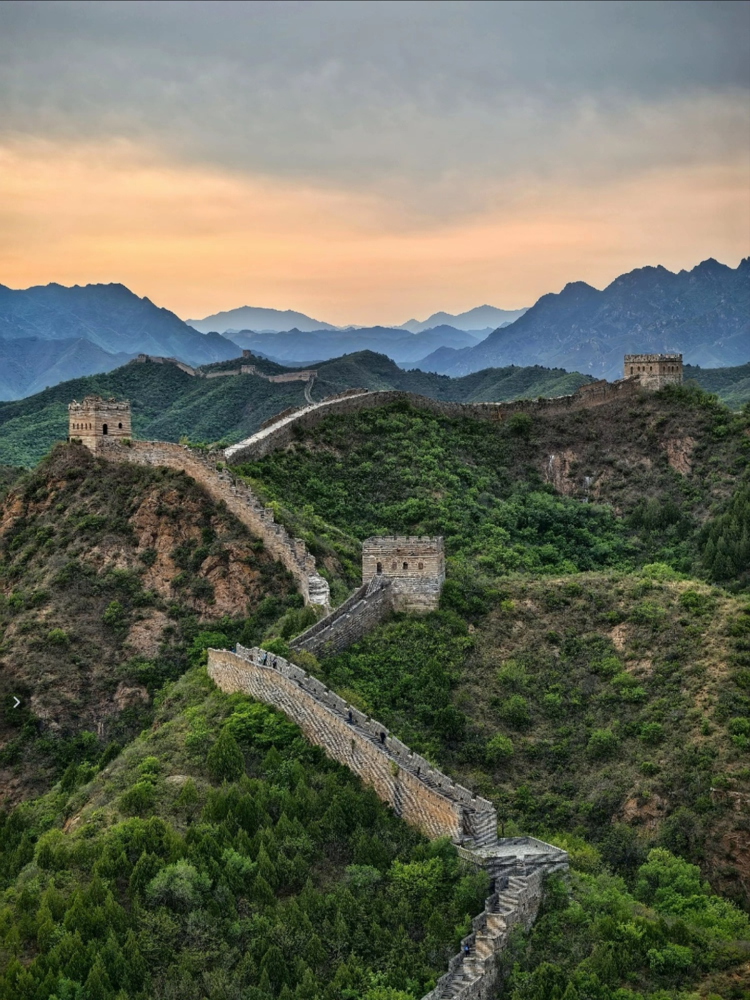
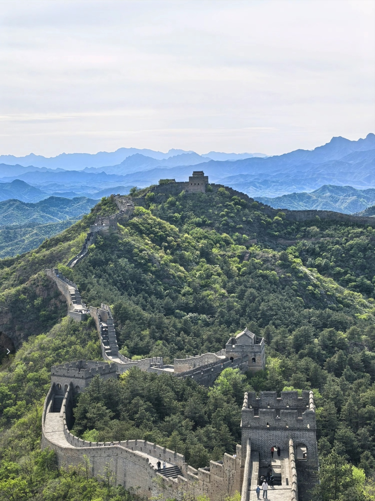
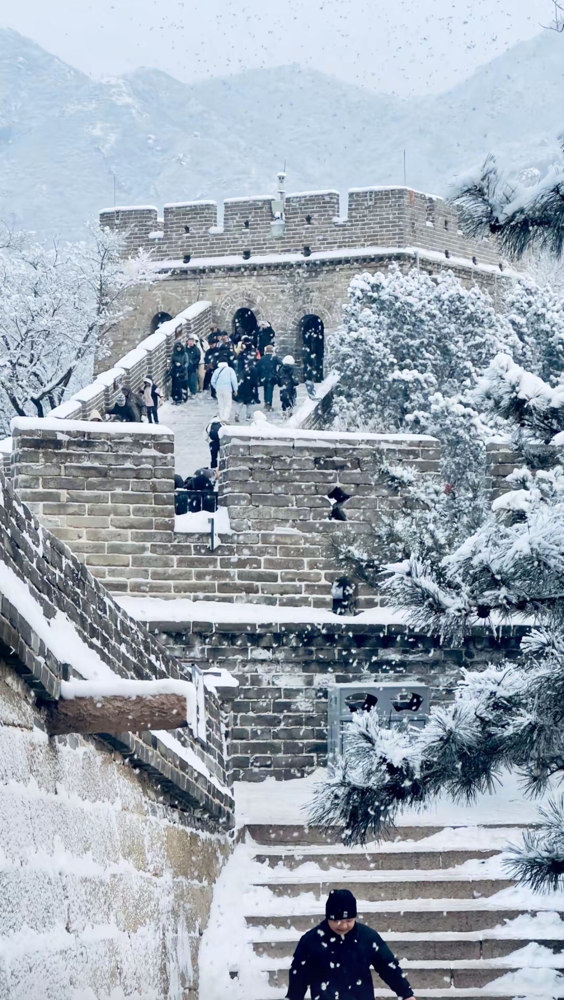

The Great Wall of China is one of the most iconic landmarks in the world, stretching over 13,000 miles (21,000 km) across northern China. Built over centuries to protect against invasions, it offers breathtaking views and a glimpse into China's ancient history. The wall winds through mountains, deserts, and grasslands, creating a spectacular sight that has inspired travelers for generations.






By Bus: Take Bus 877 from Deshengmen Bus Station to Badaling (1.5 hours, ¥12). Buses depart every 20 minutes from 6:00 AM to 12:00 PM.
S2 Train: Depart from Beijing North Railway Station to Badaling Station (1.5 hours, ¥6.5). Trains run daily but schedule varies.
Taxi: From downtown Beijing to Badaling (70km, 1.5 hours, ¥300-400 one way). Can be hired for full day tours (¥800-1000).
Official Tour Bus: Departs from Qianmen or Beijing Railway Station. Includes guide and entrance ticket (¥150-200 per person).
Duration: 3-4 hours
Route: Entrance → North Section → Watchtower 8 → South Section → Exit
Difficulty: Easy (cable car available)
Best for: First-time visitors, families with children
Duration: 5-6 hours
Route: Cable car up → Watchtower 14 → Watchtower 20 (highest) → Watchtower 6 → Toboggan down
Difficulty: Moderate
Best for: Photography enthusiasts, moderate hikers
Duration: 6-8 hours
Route: Jinshanling East Gate → Watchtower 24 → Simatai West → Simatai East Gate
Difficulty: Challenging (15km hiking)
Best for: Experienced hikers, adventure seekers
Duration: 2-3 hours
Route: Arrive 1 hour before sunrise/sunset → Best viewpoint → Photography session
Difficulty: Easy to Moderate
Best for: Photographers, romantic couples
Location: Inside Badaling Scenic Area
Specialty: Peking Duck, Local mountain vegetables
Hours: 11:00 AM - 9:00 PM
Location: Near Badaling Entrance
Specialty: Noodles, Dumplings, Fried Rice
Hours: 7:00 AM - 8:00 PM
Location: Yanqing Town (15km from Badaling)
Specialty: Tofu banquet, Wild vegetables, Lamb
Hours: 11:00 AM - 9:00 PM
Location: Badaling Visitor Center
Specialty: Coffee, Pastries, Sandwiches
Hours: 8:00 AM - 6:00 PM
Location: Inside Badaling Scenic Area
Features: Mountain views, Restaurant, Parking
Distance to Wall: 500 meters
Location: Shuiguan Great Wall
Features: Luxury villas, Spa, Multiple restaurants
Distance to Wall: Direct access
Location: Yanqing Town
Features: Budget-friendly, Local restaurants nearby
Distance to Wall: 15km (30 min drive)
Location: Downtown Beijing
Features: All amenities, Easy transportation
Distance to Wall: 70km (1.5 hours)